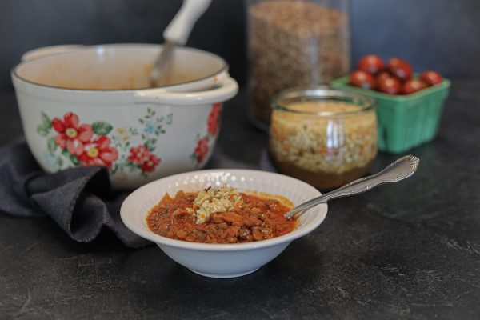

Kimchi Lentil Stew

Description:
This is a delicious take on a kimchi lentil stew recipe I found
at Bon Appetit. I veganize it by cutting the eggs.
Don't leave anything else out, though! The gochugaru (korean pepper flakes) and gochujang (korean red pepper paste) are essential
to the recipe and the flavors are so good. This dish takes me back to my time living in South Korea for sure!
Ingredients:
- 2 scallions
- 1 Tbsp. vegetable oil
- 1 small onion, thinly sliced
- 3 garlic cloves, thinly sliced
- 1 Tbsp. gochugaru
- 2 tsp. sugar
- 1 cup French green or brown lentils
- 4 cups low-sodium chicken or vegetable broth
- 1 tsp salt
Steps:
- Remove dark green tops from scallions and thinly slice; set aside for serving. Thinly slice remaining white and pale-green parts.
- Heat oil in a large saucepan over medium-high. Cook white and pale-green parts of scallions, onion, and garlic, stirring often,
until softened and starting to brown, about 4 minutes.
- Add gochujang and cook, stirring often and reducing heat as needed to prevent burning,
until very fragrant and slightly darkened in color, about 2 minutes.
- Add kimchi, gochugaru, and sugar and cook, stirring, until kimchi is slightly
softened and translucent, about 2 minutes.
- Add lentils, broth, and 1 tsp. Diamond Crystal or ½ tsp. Morton kosher salt and stir to combine.
Bring stew to a boil, then reduce heat and cover.
- Simmer, adding a splash of water if needed to loosen, until lentils are just barely tender, 20–25 minutes.